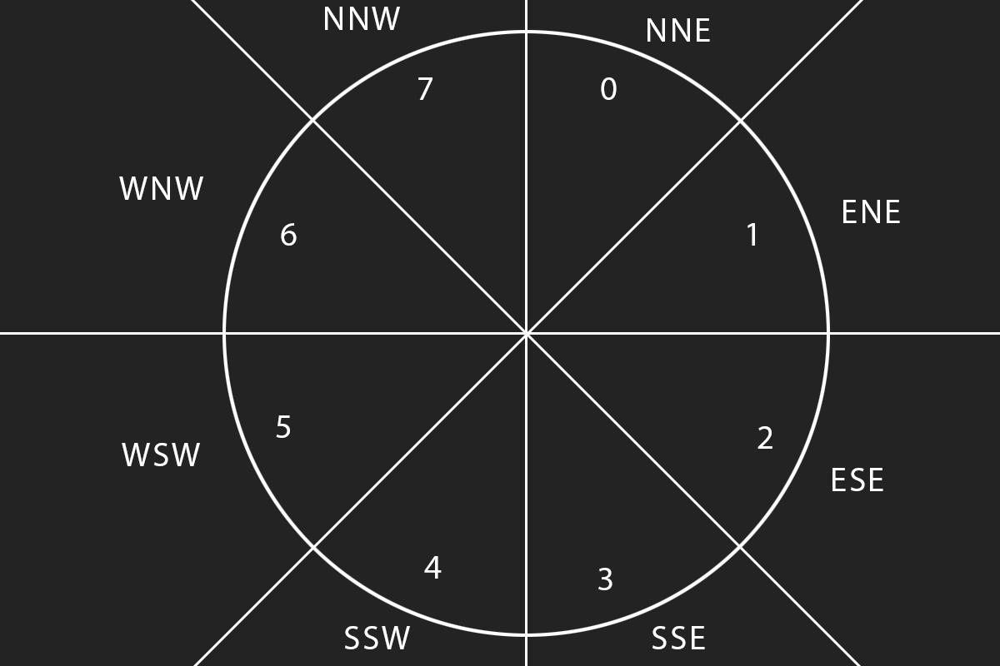

Drawing Circles
Given a circle with center \(C(x_c, y_c)\) and radius \(r\), the range of pixels to draw on the x axis is \(x_c - r\) to \(x_c + r\), inclusive. This means the possible horizontal pixel values are \(2r + 1\). The same is true for vertical y values. When drawing circles, it's common to treat the center of the circle as the origin of the coordinate system, and divide the circle into eight arcs of equal length.
We only need to focus on one of these eight sections, as the circle is symetric. The equation of a circle is expressed as \(x^2 + y^2 = r^2\). We can draw the arc of the section of a circle by going from pixel to pixel based on the least amount of error, much like error based line drawing.
For example, if \(r = 8\), we start at the top of the circle, drawing the arc for section 0. At this point \(x = 0\) and \(y = r\). We can run a loop to increase x by one at each step, and find a way to measure the error between the pixel and actual arc to choose \(x + 1, y\) and \(x + y, y - 1\). An easy way to make this decision is to compute both \(x + 1, y\) and \(x + 1, y - 1\) to see which one is closer to \(r^2\), If we draw the arc for the entire quadrant, we should end up with \(x = r, y = 0\).
Like with line drawing, we can calculate the circle using integer math only. We can also avoid calulating squares by finding the difference between \(x^2\) and \(y^2\) and keeping track of an error. Let's call these values \(u\), \(v\) and \(E\) respectivley. When \(x = 0\) and \(y = r\), these will equal \(u = 1\), \(v = 2r - 1\), and \(E = 0\).
$$u = (x + 1)^2 - x^2 = 2x + 1$$ $$v = y^2 - (y - 1)^2 = 2y - 1$$ $$E = x^2 + y^2 - r^2$$
In each iteration of the loop to draw an arc, we want to increase \(x\) by \(1\). This would increase the value of \(x^2\) by \(u\), \(E\) also needs to be increased by \(u\) to keep track of the current error. Increasing \(x\) by \(1\) means that \(u\) will also need to be increased by \(2\). Next, we need to decide if \(y\) stays the same, or is decreased by \(1\). If \(y\) was to be decreased by 1, \(y^2\) would be decreased by \(v\), and so would the error \(E\). We want the error (absolute value of \(E\)) to be as small as possible, which makes the test condition for decreasing y: \((|E - v|) < |E|\). Y is only decreased if this test succeeds.
The decision making equation \((|E - v|) < |E|\) could also be written as \((E - v)^2 < E^2\), which can be simplified to remove the exponents into \(v(v - 2E) < 0\). Since we know that \(v\) is always positive, this test can be further simplified into \(v < 2E\). Given this information, we can write a function to draw the first 1/8 arc of a circle with radius r.
void DrawArc(int radius, Point center, COLOR color) {
int x = 0;
int y = r;
int u = 1;
int v = 2 * r - 1;
int e = 0;
while (x <= y) {
PutPixel(center.x + x, center.y + y, color);
// Increase x (and error)
x += 1;
e += u;
u += 2;
// Test if y is decreased
if (v < 2 * e) {
y -= 1;
e -= v;
v -= 2;
}
}
}
This gets us to one arc of the circle, but it can't draw a full circle just yet. Drawing a full circle looks very similar, but instead of drawing one pixel, we draw 8 pixels based on the symetry of the circle. Plotting symetrically doesn't involve any additional math. Instead of adding x and y to the center, we need to take care of a combination of adding and subtracting.
void DrawCircle(int radius, Point center, COLOR color) {
int x = 0;
int y = r;
int u = 1;
int v = 2 * r - 1;
int e = 0;
while (x < y) {
PutPixel(center.x + x, center.y + y, color);
PutPixel(center.x + y, center.y - x, color);
PutPixel(center.x - x, center.y - y, color);
PutPixel(center.x - y, center.y + x, color);
// Increase x (and error)
x += 1;
e += u;
u += 2;
// Test if y is decreased
if (v < 2 * e) {
y -= 1;
e -= v;
v -= 2;
}
// Notice the condition of the while loop changed
if (x > y) {
break;
}
PutPixel(center.x + y, center.y + x, color);
PutPixel(center.x + x, center.y - y, color);
PutPixel(center.x - y, center.y - x, color);
PutPixel(center.x - x, center.y + y, color);
}
}